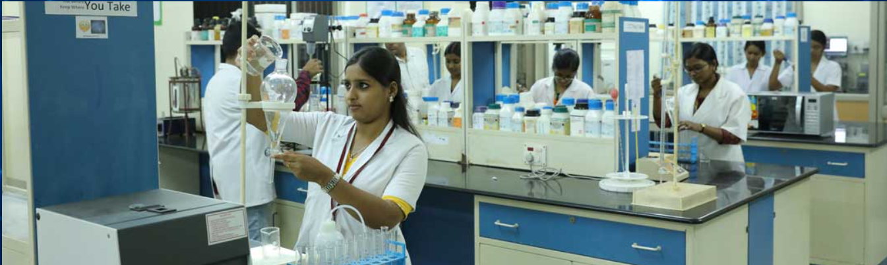
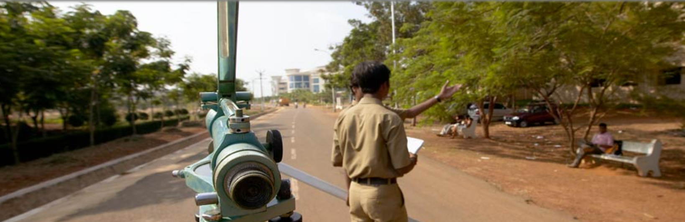

Departments (2021)
Chemical and Biotechnology
The School of Chemical & Biotechnology (SCBT) was established in 1994. Over the years it has grown to be one of the best Biotechnology Schools in the country. The school integrates intellectual and infrastructural strengths to nurture scientific temper and skills to excel in the domains encompassing life sciences and engineering.
The School of Chemical & Biotechnology comprises four divisions namely Bioengineering, Bioinformatics, Biotechnology & Chemical engineering through which it offers various undergraduate, postgraduate, integrated postgraduate and research programmes. The Vision and Mission of the programmers are aligned with the Vision and Mission of the Institution. The curricula are contemporary and relevant to the programme, with the programme outcomes inline with the graduate attributes and the specific requirements of the chosen discipline.
Civil Engineering
The school has full-fledged laboratories with the latest machines and instruments to support the syllabi and promote research & consultancy. It houses the following laboratories:
Fluid Mechanics and Machinery Laboratory
Pelton Wheel, Kaplan Turbine, Francis Turbine, Ultrasonic Flow Meter, Tilting Flume, Various Pump Test Rigs, Flow Measuring Devices, etc. are the facilities available in the
Fluid Mechanics and Machinery Laboratory.
Geotechnical Engineering Laboratory
The Geotechnical Engineering Laboratory is equipped with Direct Shear Apparatus for soil and geotextiles, SPT and SCPT apparatus, Vane Shear Test apparatus, UCC apparatus,
Direct Shear Test apparatus for rock, Schmidt Hammer (L type), Geotextile Permeameter, Automated 3-gang Consolidometer, etc.
Survey Laboratory
The Survey Laboratory is equipped with Total Stations with accessories, DGPS, Handheld GPS, Micro Optic and Vernier Theodolites, Dumpy Levels, Tilting Levels, Subtense Bar,
Digital Distance Meter, Field Geological Kit, etc.
Electrical & Electronics Engineering
The School of Electrical & Electronics Engineering (SEEE) was established in the year 2003 and offers various UG and PG programmes. SEEE at SASTRA is among the leading schools of its kind in the nation, built on fundamentals of Applied Mathematics and Engineering Physics, providing multidisciplinary, systems-oriented UG and PG education and research.
Starting their freshmen year, students will be given the opportunity for hands-on skills facilitated by reputed faculty members in high-demand areas including Radar, Information Security, Cyber-Physical Systems, Communications, Power Systems, Control Systems, and Robotics.
The school is oriented towards imparting high-quality education using modern day effective pedagogic approaches at both UG & PG levels attracting meritorious students. The school has now built its reputation in the field of research addressing many socially related problems. The research work of the school is supported by governmental funding agencies. The quality of the research output and human resource output is improving over the years, and it is evident through the high impact factor publications and the positive employer feedback about our students.
Computer Science Engineering
The School of Computing has very sophisticated computer lab facilities for training and R&D work in various areas of Computer Science & Information Technology applications. The various facilities include Parallel Programming, Software Engg & Testing, Computer graphics, Multimedia & 3D, AutoCAD, Image Processing, Networking, Various Operating Systems, GUI, Distributed Computing, DOTNET, Web sphere. The School of Computing has signed Memoranda with Microsoft & IBM for DotNet, DB2 & Web sphere training. The LAN is designed with student cabling implementing star Networking technology issuing high speed switches.
Mechanical Engineering
The school has well qualified and experienced faculty members with specialization in various fields like, Aerospace Engineering, Automobile Engineering, CAD/CAM, Engineering Design, Machine Tool Engineering, Manufacturing Technology ,Mechatronics, Metallurgy, Robotics, Thermal Engineering, etc.
Law

Started in 2008 with BCI Approval • Offering 3 programmes – B.A./B.Com./B.B.A., LL.B. • Admissions on merit based on +2 marks • Committed faculty team headed by Prof.(Dr.) Ravisekhar Raju • Excellent facilities – dedicated building with galleria type classes, moot court, hi-tech auditorium, excellent library, etc. • Entire library collection of Legendary Jurist Shri G.Ramaswami with more additions and subscriptions to online databases like Lexis Nexis, Manupatra, etc. • Research Chair on Legal Anthropology • Encouragement to students in all forms • Legal education in a comprehensive university ecosystem